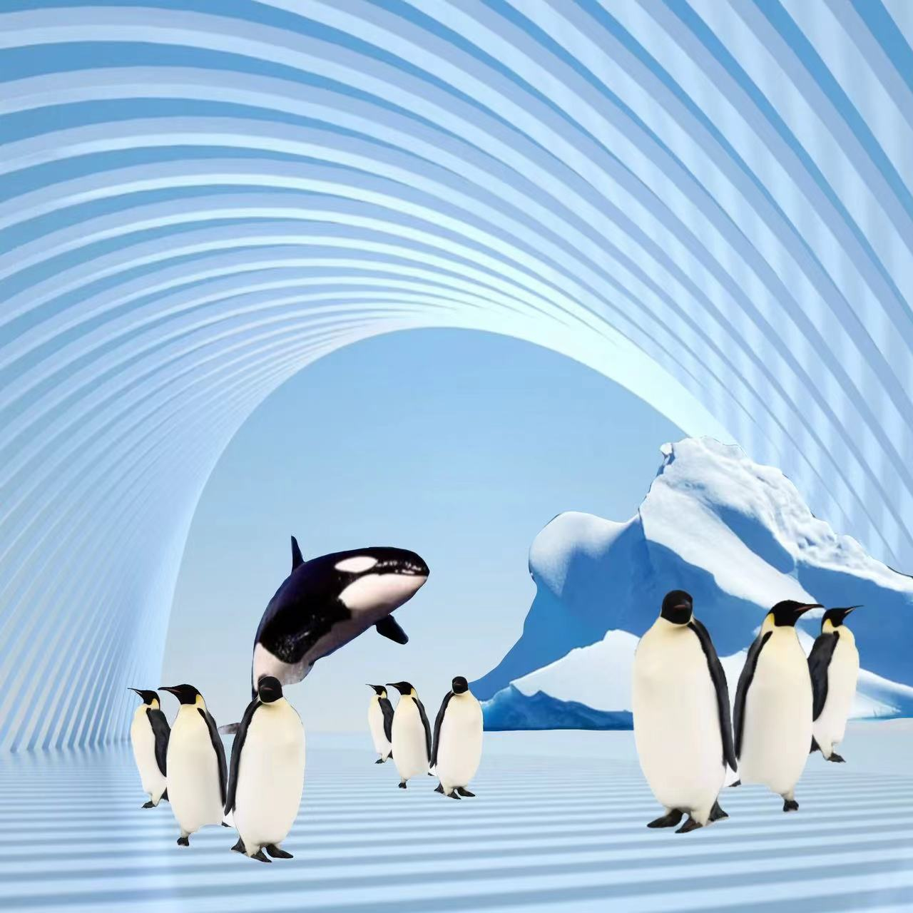

Penguin world， 2088
Peguin world
The first scene is the ice world,it was created in 2088. in this virtual world, blue whales do not live in the ocean, user can get close to blue whales, while penguins are all around you. Our goal is to bring users an experience of the Antarctic world.